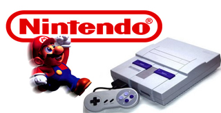

Emulador Game-Cube e Nintendo Wii
Muitos usuários se perguntam como ficariam os jogos do Nintendo Wii caso o console oferecesse suporte a alta definição. Afinal, ele é o único videogame da última geração que exibe imagens com resolução superior a 480p.
Se você é um proprietário do Nintendo Wii ou mesmo de seu antecessor, o GameCube, experimente emular os jogos no PC com a ajuda do Dolphin. Além de apresentar uma grande compatibilidade com diversos títulos dos dois consoles, ele oferece gráficos ainda melhores e alcança a cobiçada resolução Full HD.
O Wii como você nunca viu
Dolphin simula uma biblioteca de jogos em seu computador. Para tal, mova todos os arquivos ISO (para os jogos do Nintendo Wii) e WADS (GameCube) para um mesmo diretório do seu computador. Depois, clique na opção "Browse" da janela principal do emulador e aponte para a pasta onde os jogos se encontram. O programa localiza os games automaticamente, basta clicar duas vezes sobre eles para executá-los.
Configuração
Caso já tenha experimentado outros emuladores para os consoles mais atuais, saberá que a configuração pode ser trabalhosa. Bem ao contrário, Dolphin já acompanha todos os plugins de que necessita e possui versões dedicadas a diferentes sistemas operacionais. Caso as configurações iniciais não funcionem ou rodem de maneira insatisfatória, clique na opção "Config" e, a seguir, na aba "Plugins".

Playstation 2, o segundo console de videogame da Sony, foi lançado em 2000 e explodiu em sucesso no mundo todo rapidamente. Além de trazer o nome Playstation, que há alguns anos já era considerado o melhor videogame do mercado, esta segunda versão não ficava atrás da primeira, e também dava um banho de superioridade na concorrência.
O sucesso do console foi muito superior ao dos concorrentes Game Cube e Dreamcast, que juntos venderam menos de um terço do número de unidades de Playstation 2 vendidas mundialmente. Dominando todo o mercado, o console logo tornou-se extremamente popular.
PCSX2
PCSX2 é um emulador de Playstation 2 que visa permitir aos fãs do videogame jogá-lo no computador. Entretanto, para poder utilizá-lo é necessário ter em seu computador o arquivo da firmware do videogame.
Como a firmware é o que identifica o videogame, e cada console vem com sua própria firmware, um usuário só poderá ter em seu computador a firmware relativa ao console de sua propriedade. Manter firmwares de consoles alheios em seu computador consiste crime de pirataria com punição prevista na legislação.
O MAME — Multiple Arcade Machine Emulator (Emulador de Múltiplas Máquinas de Arcade) — é o mais famoso emulador de jogos arcades (também conhecidos popularmente no Brasil como fliperamas). São mais de 9000 jogos suportados, incluindo os clássicos que marcaram época nas décadas de 70, 80 e 90.
Para que um jogo possa ser emulado no MAME é necessária a utilização de um arquivo chamado ROM, o conjunto de dados extraídos do chip original do arcade. Com estes dados, o emulador comporta-se como o hardware e reproduz o conteúdo da ROM no computador. Sendo assim, os jogos emulados não são meras simulações, mas sim cópias dos originais encontrados em fliperamas.
Fãs de arcades que ficavam horas e horas em frente a uma máquina de fliperama agora podem se divertir em seus próprios PCs! O propósito do programa é preservar a história destes arcades, impedindo que sejam esquecidos ou perdidos com o avanço da tecnologia.
Compatível com praticamente todos os jogos já lançados para o Super Nintendo e com ótimas opções de personalização de imagem ou controle, ZSNES é a melhor opção para relembrar o quanto era divertido a época dos 16 bits;
Em se tratando de Super Nintendo, o ZSNES é o emulador mais utilizado pelo pessoal que gosta de reviver aqueles games clássicos dos anos 90. Também pudera, pois este emulador oferece uma enorme facilidade de uso, além de recursos extras que o tornam o número um entre os concorrentes.
E como relembrar os velhos tempos se aquele seu console empoeirado já não funciona mais? Simples, com o ZSNES você pode emular jogos do Super Nintendo em seu computador e relembrar de clássicos como Super Mario World, Rock´n Roll Racing, Top Gear 2 e muitos outros.
O ZSNES possui muitas funcionalidades que auxiliam e facilitam a vida do jogador, como capacidade de salvar o jogo no ponto que ele está sendo jogado, suporte para anti-aliasing (filtro para suavizar ou “lapidar” formas) e Smoothing (esfumaçar, opção para que o jogador não visualize os frames quadrados), além da possibilidade de tirar screenshots e/ou gravar filmes do jogo que está sendo emulado.

|